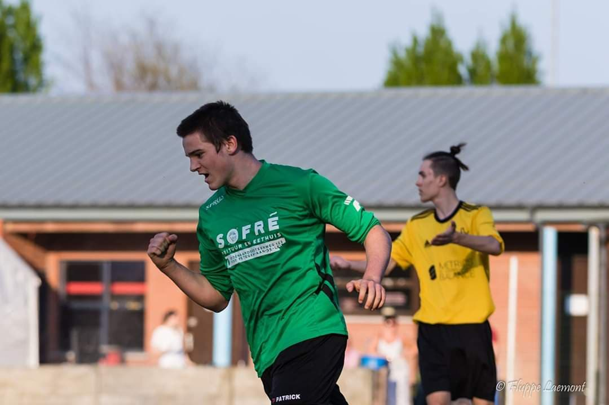

Portfolio
Hallo, ik ben Lander De Ghein. Ik ben 20 jaar en student Toegepaste informatica aan de Hogeschool Gent.
Show moreHallo, ik ben Lander De Ghein. Ik ben 20 jaar en student Toegepaste informatica aan de Hogeschool Gent.
Show moreIk heb mijn middelbare studies afgerond in 2019. Ik ben uiteindelijk afgestudeerd in de richting wetenschappen wiskunde. Achter mijn studies in het middelbaar was ik wel vrij zeker dat ik iets wou studeren met informatica in. Zo gezegd zo gedaan dus begon ik aan mijn studies toegepaste informatica aan de Hogeschool Gent. Momenteel bevind ik me in het tweede jaar. Tijdens mijn studies ontdekte ik wel mijn passie voor cybersecurity. Dit is richting waarin ik later dan het liefst wil werken.
In mijn vrije tijd ben ik in de eerste plaats voetbalspeler. Het feit dat het een teamsport is en je alle vreugde kan delen met je vrienden maakt het zo aantrekkelijk. Buiten het voetbal blijf ik zeer sportief met fitnessen. In de zomer kan het ook wel eens gebeuren dat ik ga gaan surfen in het buitenland. Bovendien ben ik iemand die heel graag reist en andere culturen opzoekt.
De bemiddelaar heeft het vermogen naar anderen te luisteren en standpunten bij elkaar te brengen. De bemiddelaar vermijdt conflicten. De bemiddelaar is dan ook iemand die bereid is compromissen te sluiten. De bemiddelaar is flexibel en bereid anderen te accepteren. De bemiddelaar zal in de ogen van anderen vaak geen eigen mening hebben. Volgens het enneagram wordt de bemiddelaar gedreven door luiheid. Andere termen voor de bemiddelaar zijn: onderhandelaar of vredesstichter.
ISTJ Volgens het model van Jung zijn jouw voorkeuren: introversion, sensing, thinking en judging. Dat wil zeggen, je bent systematisch, ijverig en gereserveerd. Je stelt prijs op orde en structuur en hebt een sterk gevoel van verantwoordelijkheid. Je werkt grondig, hebt veel doorzettingsvermogen en oog voor detail. Anderen vinden je uiterst betrouwbaar. Je richt je op feiten, details en resultaten. Je komt het meest tot je recht in beroepen en activiteiten waarin een grondige afhandeling van werkzaamheden vereist is. Beroepen die bij je passen zijn bijvoorbeeld: accountant, elektricien, en wiskundeleraar. Je leert het makkelijkste: van concrete en nuttige toepassingen Valkuilen: Pas op dat je niet in een sociaal isolement terecht komt. Je kunt ook star worden en je in details verliezen.
Een van mijn grootste valkuilen is toch wel dat ik soms te veel creativiteit vertoon. Dit is dan vaak irrelevant tot het project en neemt dan veel te veel tijd in beslag waardoor ik de nodige dingen uit het oog verlies. Daarbij komt dan kijken dat ik mijn collega’s altijd blijf probeer te overtuigen waardoor ze meestal mee instemmen tegen hun zin in. Dit kan dan ook niet altijd de juiste oplossing zijn en dan zitten we allemaal fout terwijl ik misschien meer had moeten luisteren naar mijn collega’s. Mijn grootste kwaliteiten hebben 1 rode draad. Het zijn allemaal people skills. Ik weet niet hoe het komt maar ik kan het van jongs af aan altijd goed vinden met andere mensen. Ik vind het zelf ook altijd super belangrijk want met goeie samenwerking en communicatie kan je zoveel meer bereiken dan alleen. Mijn grootste uitdagingen zijn wel oog voor detail hebben.